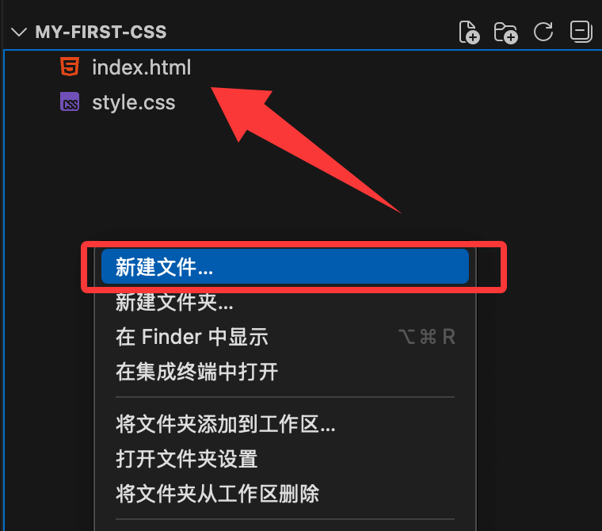

CSS Editor
You can use professional CSS editors to edit CSS. Here are a few commonly used editors recommended for you:
You can download the corresponding software from the official websites of the above software and install it by following the steps.
You can also use our online editor:https://www.jyshare.com/front-end/61/
Next, we will demonstrate how to use the VS Code tool to create CSS files.
VS Code
Visual Studio Code (VS Code for short) is an open-source code editor developed by Microsoft that supports operating systems such as Windows, Linux, and macOS, with built-in extension management functionality.
VS Code installation tutorial reference:https://www.example.com/vscode/vscode-tutorial.html
Install the required plugins (Extensions):
Click the square icon (Extensions) in the left sidebar of VS Code, search for and install the following two plugins. They are crucial for beginners:
- Live Server:Allows you to preview web pages in real time in the browser. After saving the code, the browser will automatically refresh.
- HTML CSS Support:Enhances CSS intelligent suggestions.

Step 1: Set up the project structure
Create a folder named on your computermy-first-cssthe folder
Open in VS Code: Click File -> Open Folder... in the top-left corner of VS Code, then select the folder you just created.
Right-click on the blank area of the resource manager on the left, and create a new file index.html (this is the skeleton of the web page).
-
Right-click again, and create a new file style.css (this is the skin of the web page).

Step 2: Write the HTML skeleton
CSS must exist attached to HTML. The following is the index.html file code.
In<body>Enter the following code within the tag, andBe sure to add it<link>Use a tag to link the CSS file：

Step 3: Write the CSS styles
Enter the following code in the style.css file:
Example
body {
background-color: #f0f2f5;
font-family: 'Segoe UI', sans-serif;
display: flex;
justify-content: center; /* Horizontal centering */
align-items: center; /* Vertical centering */
height: 100vh; /* Fill the full screen height */
margin: 0;
}
/* Design card styles */
.card {
background-color: white;
width: 300px;
padding: 30px;
border-radius: 15px; /* Rounded corners */
box-shadow: 0 4px 15px rgba(0,0,0,0.1); /* Shadow */
text-align: center;
}
/* Title color */
h1 {
color: #333;
}
/* Button styles */
button {
background-color: #007bff;
color: white;
border: none;
padding: 10px 20px;
border-radius: 5px;
cursor: pointer;
transition: background 0.3s; /* Animation transition */
}
/* Hover effect on the button */
button:hover {
background-color: #0056b3;
}
Step 4: Run and Preview
- Back
index.htmlFile. - Click anywhere in the editing areaRight-click。
- Select"Open with Live Server"。

At this point, your default browser will open automatically, and you should see a centered white card with a title and a button on it. When you place the mouse cursor over the button, the color will become darker.
The running result is similar to the following: